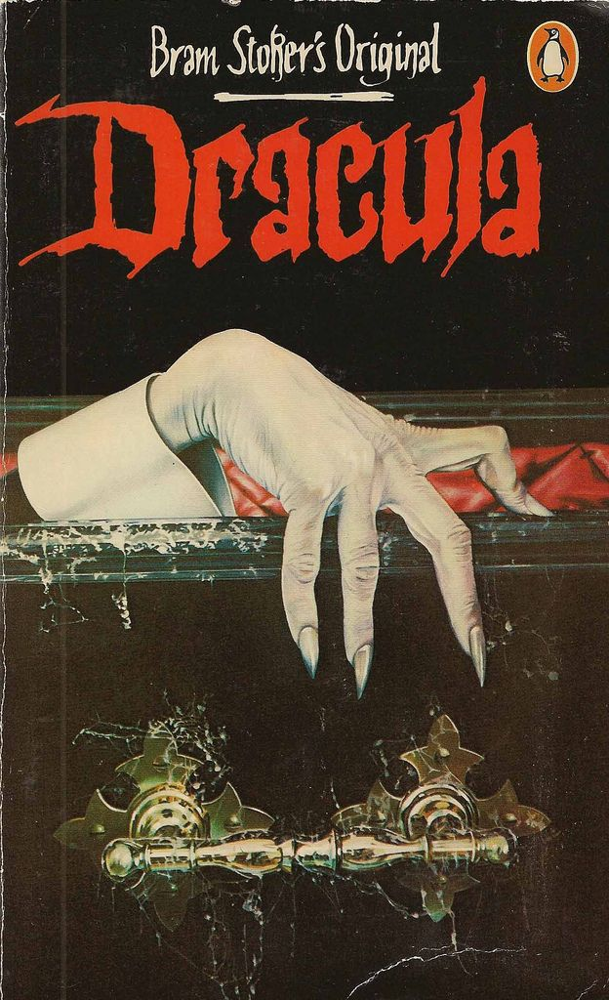

Bram Stoker's Dracula
Good against Evil. There is no more classical horror story then Dracula.
A story that takes place among the Carpathian Mountains in Transylvania, is extremely satisfying although some say it's chilling effect "leaves us with a sensation of emptiness".
Bram Stoker's Character of Dracula is based on a real life Hungarian prince Vladimir Dracule, also known as "Vladimir the Impaler" (in the book Dracula), mainly because he was known for impaling his enemies among other terrible acts. There are legends of Vladimir (Dracula) inviting all the sick and homeless, and elderly, to a feast in his castle. Seemingly good intentions turned deadly when Vlad locked them in and burned down the hall to solve the problems of hunger and disease.
Dracula by Bram Stoker is written as a series of diary entries, and the entries were compiled after the events had transgressed in order to figure out what had happened. Therein lies one of the great charms of Dracula, the cobbled together stories at times incomplete truly adds to the mystery of Bram Stoker's Dracula.